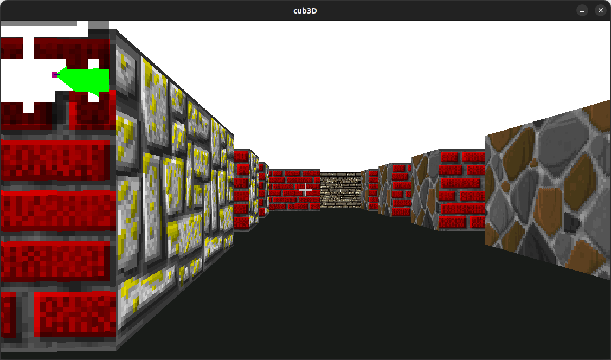

Cub3d
Refaire un systeme de raycasting en C

Le projet
L'objectif était de refaire un système de raycasting comme un des premiers jeux en 3D Wolfenstein3D La librairie graphique utilisé ne permettait que de poser des pixels sur une image et d'afficher cette dernière
Ce que j'ai appris
J'ai appris les maths derrière Wolfenstein3D et le systeme de raycasting pour simuler une 3D très peu couteuse
← Retour aux projets